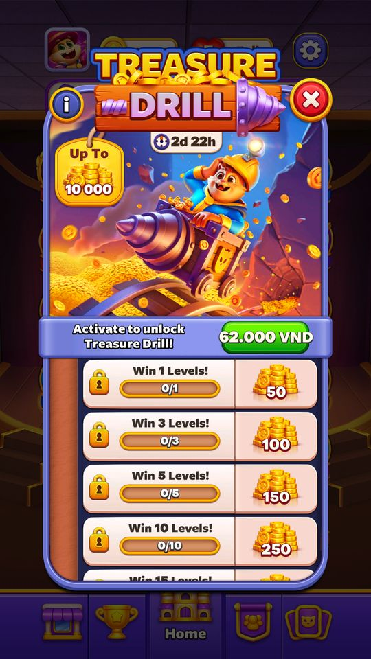
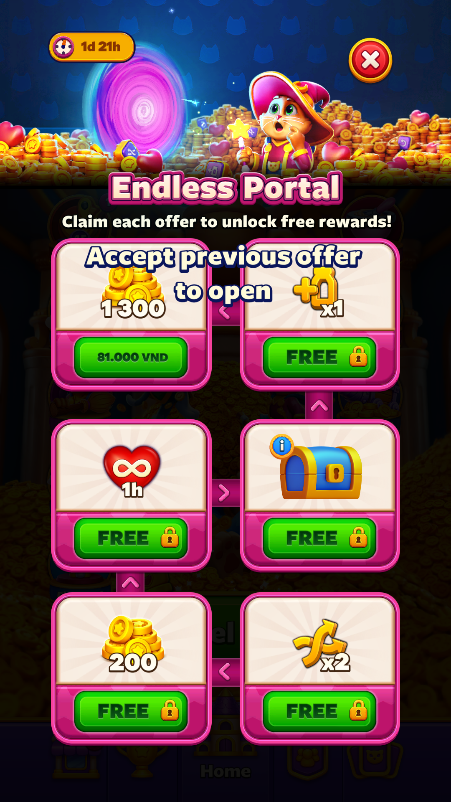

MagicSort — Một người chơi có nhiều “nhóm”: giá offer, đường thưởng và độ khó
Mục lục bài phân tích
- Nhận định dành cho game designer
- Ví dụ xuyên suốt: An, Bình và Chi cùng chơi 40 màn thắng
- Năm nhãn và treatment thật trong cache
- Đường thưởng: phải cộng dồn từng mốc mới thấy độ nặng
- Sáu trục cá nhân hóa: mỗi trục có một quyết định riêng
- Case mô tả và kiểm chứng
- Đánh giá thiết kế và cách đọc cùng chuẩn RoyalMatch
- Nguồn kiểm chứng và phần còn thiếu
Đối chiếu 10/10/2026. Game đang cài 0.0.3129; mã native đọc được thuộc 0.0.3063. Bài này dùng cache của bản đang chạy cho số liệu, dùng pseudo-C để giải thích nhánh xử lý, và dùng ảnh LDPlayer để xác nhận phần người chơi thực sự nhìn thấy. ✅ là số liệu/ảnh thật; 🧪 là ví dụ giả định được tính từ luật và bảng thật.
Nhận định dành cho game designer
Cá nhân hóa mạnh nhất đọc được nằm ở “cần chơi bao nhiêu để nhận quà”, không chỉ ở giá mua. Ba đường Magic Streak cần 20.705 / 30.305 / 39.705 điểm để đi hết. Nhóm whale cần thêm 19.000 điểm so với nhóm non-purchaser/poor, tức nhiều hơn 91,8%, trong khi cùng nhìn thấy phần thưởng cuối  10.000 coin. Đây là khác biệt về công sức rất lớn nhưng không thể thấy nếu chỉ chụp phần đầu popup.
10.000 coin. Đây là khác biệt về công sức rất lớn nhưng không thể thấy nếu chỉ chụp phần đầu popup.
Năm nhãn thương mại không phải năm chân dung kỹ năng. Non-purchaser và poor cùng dùng đường thưởng NPP, nhưng Treasure Drill trỏ tới hai SKU danh nghĩa 2 và 5 USD; hamsi và dolphin cùng đường DH nhưng SKU là 10 và 15. Một nhãn có thể được gom khác nhau tùy sản phẩm. Không có ngưỡng chi tiêu, cửa sổ 7/30 ngày hay mô hình chấm điểm backend trong bộ nguồn này.
Phân nhóm của sự kiện và phân nhóm toàn tài khoản có thể khác scope. Global cache ghi SegmentDataModel.segment=non-purchaser. Native Magic Streak lại đọc MagicStreakGaeModel.Segment để chọn đường thưởng. Vì vậy không lấy nhãn global làm bằng chứng rằng mọi event đang dùng đúng nhãn đó tại cùng thời điểm. Cần ghi cả nhãn khi nhận event và nhãn lúc mở offer.
DLB là một nhánh chọn seed có điều kiện, chưa phải bằng chứng “trả tiền thì màn khó hơn”. Cache hiện tại có DLB tại đúng bảy level; level 351 của phiên test không nằm trong bảy level đó. Quyền chọn SKU, target sự kiện, seed level và quảng cáo cần được đọc riêng trước khi ghép thành hành trình.
Tóm lại: backend/config cung cấp nhãn và dữ liệu → từng tính năng kiểm điều kiện riêng → chọn SKU, đường thưởng hoặc seed → người chơi thấy UI → thắng/thua/claim làm thay đổi tiến độ → lần đồng bộ sau có thể cập nhật dữ liệu. Chưa đo được thời điểm backend đổi nhãn sau một lần mua.
Ví dụ xuyên suốt: An, Bình và Chi cùng chơi 40 màn thắng
🧪 Ba người giả định cùng level 110, cùng thời lượng event, Collection tắt, bắt đầu 0 điểm và hệ số x1. An được event gán non-purchaser; Bình hamsi; Chi whale. Riêng ví dụ này giả định nhãn lưu ở GAE và Drill thống nhất cho từng người; đây không phải luật đồng bộ đã được chứng minh. Giả định mọi lượt thắng được tính một đơn vị cơ sở, không có nhân độ khó khác và không đứt chuỗi. Đây là mô hình số học để so treatment, không phải ba tài khoản đã chạy test.
| Thời điểm | An — NPP | Bình — DH | Chi — W | Vì sao có khác biệt? |
|---|---|---|---|---|
| Mở Treasure Drill | SKU sort.treasuredrill2, dollarEquivalent 2 | sort.treasuredrill10, 10 | sort.treasuredrill25, 25 | Bảng IAP có khóa theo từng nhãn; còn cần event mở và store trả giá |
| Thắng lần 1 | +1, tổng 1 | +1, tổng 1 | +1, tổng 1 | Điểm lấy hệ số hiện tại trước khi tăng chỉ số |
| Thắng lần 2 | +5, tổng 6; qua mốc 1 cần 5 | Như An | Như An | Phần đầu giống nhau, tạo cảm giác cùng một sự kiện |
| Thắng lần 5 | Tổng 141 | Tổng 141 | Tổng 141 | 1+5+10+25+100; chưa tới mốc 2 tích lũy 205 |
| Thắng lần 10 | Tổng 641; qua 3 mốc | Tổng 641; qua 3 mốc | Tổng 641; qua 3 mốc | NPP mốc 3 ở 505; DH/W ở 605 |
| Thắng lần 20 | Tổng 1.641; qua 5 mốc | Tổng 1.641; qua 5 mốc | Tổng 1.641; qua 4 mốc | Chi còn thiếu 64 để qua mốc 5 (1.705) |
| Thắng lần 40 | Tổng 3.641; qua 10 mốc | Tổng 3.641; qua 7 mốc | Tổng 3.641; qua 6 mốc | Cùng hiệu suất chơi nhưng tốc độ trả thưởng khác rõ |
| Đi hết đường | Cần 20.705 điểm | Cần 30.305 điểm | Cần 39.705 điểm | 20 mốc cho mỗi nhóm; tổng cần cộng tất cả mốc |
Với giả định trên, từ lần thắng thứ 4 trở đi tổng điểm là 100 × số lượt thắng − 359. Số lượt thắng liên tục tối thiểu trong mô hình là 211 / 307 / 401. Đây không phải dự báo thời gian hoàn thành thực tế: lượt thua, hết giờ event, các loại màn và hệ số khác có thể đổi kết quả. Ví dụ có ích ở chỗ chỉ ra cùng “Grand Prize 10.000” có thể đại diện cho ba lượng công sức rất khác nhau.

*✅ Ảnh LDPlayer đã có trong hồ sơ: x1/x5/x10/x25/x100; thanh 0/5; mốc 18 là 600 coin, mốc 19 là pack, mốc 20 là 10.000 coin. Ảnh minh họa một đường thưởng có Collection, không xác nhận trực tiếp nhãn backend của ba người giả định.*
Năm nhãn và treatment thật trong cache
| Nhãn chính xác | Treasure Drill: productId | Dollar equivalent | Magic Streak: đường chọn trong native | Tổng target 20 mốc | Ví dụ tình huống |
|---|---|---|---|---|---|
| non-purchaser | sort.treasuredrill2 | 2 | NPP / WithCollectionNPP | 20.705 | 🧪 An có nhãn này: đường NPP; không cần giả định An có ít coin |
| poor | sort.treasuredrill5 | 5 | NPP / WithCollectionNPP | 20.705 | 🧪 Đổi nhãn An sang poor chỉ đổi SKU Drill trong bảng này, không đổi target GAE |
| hamsi | sort.treasuredrill10 | 10 | DH / WithCollectionDH | 30.305 | 🧪 Bình thấy SKU 10 nhưng cùng target GAE với dolphin |
| dolphin | sort.treasuredrill15 | 15 | DH / WithCollectionDH | 30.305 | 🧪 SKU tăng 50% theo dollarEquivalent so với hamsi, target không tăng |
| whale | sort.treasuredrill25 | 25 | W / WithCollectionW | 39.705 | 🧪 Chi cần 9.400 điểm hơn DH để đến cùng mốc cuối |
| Rỗng / nhãn không nhận diện | Native Drill dùng phần tử đầu dictionary nếu lookup trượt | Không được mặc định ghi 2 USD như luật cứng | Native GAE rơi về NPP | 20.705 theo bảng đang đọc | 🧪 Backend gửi nhãn mới: hai tính năng có hai fallback khác nhau |
✅ Số liệu do cache client nhận từ remote config cung cấp; chọn bảng được đối chiếu native. Bảng cho biết sản phẩm sẽ được chọn nếu tính năng đủ điều kiện, không khẳng định cả năm SKU đã được thấy đồng thời trên LDPlayer.
Giá danh nghĩa, giá store và số coin là ba đơn vị khác nhau
dollarEquivalent=2 là trường cấu hình của SKU, không phải lời hứa store sẽ hiện “$2.00” hay phép quy đổi ra VNĐ. Ảnh Treasure Drill có nút 62.000 VND. Muốn xác minh giá thanh toán phải đối chiếu productId, metadata store, tiền tệ và màn xác nhận mua ở đúng tài khoản/country. So 62.000 VND ở Drill với 81.000 VND ở Endless Portal không chứng minh phân biệt giá: đó là hai sản phẩm khác nhau.


*✅ Ảnh LDPlayer trong hồ sơ: Activate 62.000 VND; mốc thắng 1/3/5/10 màn có 50/100/150/250 coin, đang khóa. Đây là bằng chứng UI của offer đã gặp, không phải receipt mua thành công. “Up to 10.000” cần chơi và claim đủ mốc; không phải 10.000 coin nhận ngay lúc trả tiền.*
Đường thưởng: phải cộng dồn từng mốc mới thấy độ nặng
NeededKeyCount là yêu cầu riêng từng mốc. Native CalculateCurrentRewardIndex cộng lần lượt RewardScore rồi mới so tổng điểm; GetTotalHatCountInRewards cộng tất cả yêu cầu. Ví dụ 5, 200, 300 của NPP nghĩa là mốc 3 ở 505, không phải chỉ cần tổng 300.
| Mốc | NPP cần thêm | NPP tích lũy | DH cần thêm | DH tích lũy | W cần thêm | W tích lũy |
|---|---|---|---|---|---|---|
| 1 | 5 | 5 | 5 | 5 | 5 | 5 |
| 2 | 200 | 205 | 200 | 205 | 200 | 205 |
| 3 | 300 | 505 | 400 | 605 | 400 | 605 |
| 4 | 400 | 905 | 500 | 1.105 | 500 | 1.105 |
| 5 | 300 | 1.205 | 300 | 1.405 | 600 | 1.705 |
| 6 | 500 | 1.705 | 700 | 2.105 | 1.000 | 2.705 |
| 7 | 500 | 2.205 | 900 | 3.005 | 1.400 | 4.105 |
| 8 | 300 | 2.505 | 700 | 3.705 | 900 | 5.005 |
| 9 | 600 | 3.105 | 1.000 | 4.705 | 1.800 | 6.805 |
| 10 | 400 | 3.505 | 800 | 5.505 | 1.200 | 8.005 |
| 11 | 800 | 4.305 | 1.100 | 6.605 | 1.600 | 9.605 |
| 12 | 700 | 5.005 | 1.200 | 7.805 | 1.300 | 10.905 |
| 13 | 800 | 5.805 | 1.800 | 9.605 | 2.500 | 13.405 |
| 14 | 1.600 | 7.405 | 2.600 | 12.205 | 3.000 | 16.405 |
| 15 | 400 | 7.805 | 1.300 | 13.505 | 2.100 | 18.505 |
| 16 | 800 | 8.605 | 1.600 | 15.105 | 3.800 | 22.305 |
| 17 | 700 | 9.305 | 1.900 | 17.005 | 2.500 | 24.805 |
| 18 | 1.000 | 10.305 | 1.800 | 18.805 | 1.900 | 26.705 |
| 19 | 400 | 10.705 | 1.500 | 20.305 | 3.000 | 29.705 |
| 20 | 10.000 | 20.705 | 10.000 | 30.305 | 10.000 | 39.705 |
Độ nặng không tăng đều. Ở mốc 10, W cần 8.005 so với NPP 3.505, hơn 128,4%; đến cuối còn hơn 91,8% vì cả ba cùng cộng 10.000 ở mốc cuối. Mốc cuối chiếm 48,3% toàn đường NPP, 33,0% DH và 25,2% W. Vì thế người gần cuối NPP có thể cảm thấy nhịp quà chậm đột ngột hơn dù cả đường ngắn hơn.
Quà đổi theo Collection và tính năng phụ
| Biến thể | NPP: tổng coin cấu hình gốc | DH | W | Cách đọc đúng |
|---|---|---|---|---|
| Không Collection | 14.100 | 13.750 | 12.750 | Chỉ cộng rewardModel có currencyType=Coin ở cấp mốc |
| Có Collection | 11.500 | 11.150 | 11.650 | Một số quà coin/life/booster đã được thay bằng pack; target không đổi |
| Chênh coin gốc khi bật Collection | −2.600 | −2.600 | −1.100 | Không cộng hai bảng cùng lúc; pack chưa được quy ra coin |
Đây là tổng danh nghĩa của nhánh reward gốc, chưa phải tổng đã phát. Magic Streak gọi RewardUtil.GetAvailableReward: khi primaryRewards có món khả dụng, native trả món đó thay cho reward gốc. Ví dụ mốc 2 có nhánh năng lượng Merge Mini Game 20 ở NPP/DH, 10 ở W. Mốc 11 có 30 và mốc 15 có 50. Không được cộng “100 coin + 20 energy” chỉ vì cùng xuất hiện trong JSON; cần chụp phần thưởng thực tế và ghi trạng thái mini-game tại thời điểm claim.
Đánh giá: nhóm W được kéo đường dài hơn nhưng không được đảm bảo tổng coin gốc cao hơn. Có thể là chủ ý điều chỉnh áp lực và nhịp thưởng, song không thể kết luận hiệu quả doanh thu/retention từ bảng. Cần đo số mốc đạt, tỷ lệ hết giờ còn dở, coin tiêu để giữ chuỗi, và tổng giá trị thực nhận theo nhánh quà cuối cùng.
Sáu trục cá nhân hóa: mỗi trục có một quyết định riêng
| Trục | Đầu vào đọc được | Điều thay đổi có bằng chứng | Ví dụ | Giới hạn kết luận |
|---|---|---|---|---|
| Thương mại toàn tài khoản | SegmentDataModel = non-purchaser | Nhãn được cache; dịch vụ fetch segment tồn tại | ✅ Coin trước test 999.996.759 nhưng nhãn vẫn non-purchaser | Tài nguyên đã chỉnh từ trước; không dùng số dư để suy ra sức chi |
| Thương mại theo event | MagicStreakGaeModel.Segment; event response có segment | Chọn NPP/DH/W; Drill dùng segment riêng của nó | 🧪 Cùng global nhãn nhưng event cũ còn nhãn cache cần kiểm riêng | Chưa biết backend có cố tình đồng bộ các nhãn hay không |
| Tiến độ / gate | GAE level 25; Drill level 110; cờ isEnable | Quyền xét hiện feature | 🧪 An level 109 chưa qua gate Drill; lên 110 mới đủ điều kiện level | Qua gate chưa đồng nghĩa có instance, icon hay slot popup |
| Lượt thử / seed | Retry hiệu dụng = max(retry − snitchRetry, 0); dlbSeeds; dlbCap; Snitch seed | Native có nhánh chọn seed thay thế | ✅ Level 39 có cap 7 và 3 DLB seed | Chưa đo mỗi seed DLB dễ hơn bao nhiêu; không chứng minh theo payer |
| Kết quả / chuỗi | StreakMultiplierIndex; điểm event | Tốc độ tích điểm và cảnh báo bảo vệ chuỗi | 🧪 Đang x100 mà reset về x1 sẽ kiếm ít hơn trong các thắng đầu tiếp theo | Kỹ năng thực không thể rút ra từ một chỉ số streak |
| Quảng cáo / remote | adConfig backend configType 48; CPM và attribution | Cache hiện tại: inter từ 61, cooldown 240s; Life rewarded bật | ✅ Banner tắt, rewarded Play On tắt trong snapshot | ConfigType 48 là mã chọn config, không tự là “nhóm 48 người chi tiền” |
DLB: bảy điểm can thiệp đã thấy, không kéo thành luật toàn game
| Level | dlbCap trong cache | Số seed DLB | Ví dụ đối chiếu retry hiệu dụng trước/sau |
|---|---|---|---|
| 39 | 7 | 3 | 🧪 Cùng account, kiểm retry hiệu dụng 6/7; ghi seed thực được chọn |
| 59 | 11 | 3 | 🧪 Đối chiếu retry hiệu dụng 10/11, giữ config không đổi |
| 69 | 6 | 3 | 🧪 Kiểm retry hiệu dụng 5/6 |
| 79 | 10 | 3 | 🧪 Kiểm retry hiệu dụng 9/10 |
| 89 | 7 | 3 | 🧪 Kiểm retry hiệu dụng 6/7 |
| 99 | 18 | 3 | 🧪 Kiểm retry hiệu dụng 17/18; chưa đổi thành số lần thua trên UI nếu chưa xác minh thời điểm tăng counter |
| 129 | 11 | 3 | 🧪 Kiểm retry hiệu dụng 10/11 |
Native tính retry hiệu dụng = max(GetRetryCount − GetSnitchRetryCount, 0) trước khi so với cap. Ví dụ retry thô 7 và snitchRetry 1 cho chỉ số hiệu dụng 6, chưa chạm cap 7. Native còn ưu tiên slSeed khi Snitch bật và seed này không rỗng; nếu nhánh đó chọn trước, việc chỉ nhìn dlbCap dễ tạo dự đoán sai. Cache hiện tại 999 regular +500 loop; không có DLB trong loop. Native thuộc bản cũ nên các case ranh giới bên dưới là việc phải xác minh trên 0.0.3129, không ghi PASS từ bảng cấu hình. Tên “DLB” cho biết ý đồ cân bằng, không đo được độ khó thực tế của layout.
Case mô tả và kiểm chứng
Các case dưới đây chia rõ đã chạy, đã đọc config/native, chưa chạy. Một case đọc config không được cộng vào số case LDPlayer đã PASS.
MS-S01 — Kho coin lớn nhưng vẫn non-purchaser
- Tiền điều kiện: snapshot trước phiên 10/10, level 351; tài nguyên đã được chỉnh trong lịch sử.
- Hành động: so summary segment với inventory, rồi mở offer của cùng tài khoản.
- Kết quả có thể xác minh: cache đồng thời ghi non-purchaser và 999.996.759 coin. Không có phép đổi nhãn chỉ từ số dư được chứng minh.
- Ví dụ: ✅ tài khoản đủ coin mua Play On hàng nghìn lần vẫn không được gọi là whale.
- Nguồn / trạng thái:
before/summary.jsonvà MS-T10; đã đối chiếu cache và UI. Đây không phải test ngưỡng phân loại backend.
MS-S02 — NPP sang poor: SKU Drill đổi, target GAE không đổi
- Tiền điều kiện: 🧪 hai event có segment lần lượt non-purchaser và poor; các gate khác giống nhau.
- Hành động: chọn SKU từ bảng Drill và bảng thưởng GAE.
- Kỳ vọng từ cấu hình: SKU 2 → SKU 5; cả hai dùng đường NPP với 20.705 điểm.
- Ví dụ: An và Dung cùng 40 lượt thắng giả định đều qua 10 mốc; dollarEquivalent khác nhau là 2 và 5.
- Nguồn / trạng thái:
treasureDrillConfigModel.segmentedIAPModel,GetRewardSteps; đã đọc, chưa chạy cặp tài khoản.
MS-S03 — DH sang W: cùng điểm nhưng khác mốc
- Tiền điều kiện: 🧪 Bình hamsi, Chi whale; cùng 3.641 điểm.
- Hành động: cộng target từng đường và xét mốc đã qua.
- Kỳ vọng từ cấu hình: DH qua 7 mốc, W qua 6; đây không phải lỗi thiếu thưởng.
- Ví dụ: W mốc 7 cần tổng 4.105, còn thiếu 464; DH mốc 8 cần 3.705, còn thiếu 64.
- Nguồn / trạng thái: bảng tích lũy phía trên,
CalculateCurrentRewardIndex; đã tính từ config, chưa test tài khoản W.
MS-S04 — Bật Collection thay quà nhưng giữ target
- Tiền điều kiện: 🧪 cùng NPP, so hai nhánh Collection tắt/bật, điểm sát 205.
- Hành động: kiểm reward mốc 2 và tổng target.
- Kỳ vọng: quà gốc mốc 2 từ 100 coin thành packType1; yêu cầu vẫn 200 riêng mốc, tức 205 tích lũy.
- Ví dụ: An thấy pack thay coin chưa đủ để kết luận An vừa bị đổi nhãn thương mại.
- Nguồn / trạng thái:
RewardStepsNPP,RewardStepsWithCollectionNPP; config/native xác nhận nhánh, chưa thao tác bật/tắt trong phiên 10/10.
MS-S05 — Primary reward thay thế quà gốc
- Tiền điều kiện: 🧪 mốc 2 NPP có 100 coin và primaryRewards là 20 Merge Energy; kiểm mini-game ở hai trạng thái khả dụng/không khả dụng.
- Hành động: đi tới mốc bằng tiến độ hợp lệ, ghi reward được chọn và số dư trước/sau.
- Kỳ vọng từ native: chọn primary khả dụng thay reward gốc; không tự cộng cả hai.
- Ví dụ: nếu nhận 20 energy thì không dùng bảng coin 14.100 làm tổng coin thực nhận.
- Nguồn / trạng thái:
RewardUtil.GetAvailableReward,MagicStreakGaeService.GetRewardSteps; đã đọc native, chưa chạy nhánh quà này.
MS-S06 — Reset chuỗi không đồng nghĩa mất điểm tích lũy
- Tiền điều kiện: 🧪 event đang chạy, điểm 641, multiplierIndex4 tương ứng x100.
- Hành động: thua một màn đủ điều kiện, đọc điểm và index trước/sau.
- Kỳ vọng từ native:
ResetStreakMultiplierghi index0; hàm này không ghi đè ProgressBarRewardScore. - Ví dụ: bốn lượt thắng tiếp theo dự kiến thêm 41 thay vì 400 nếu giữ chuỗi; hụt 359 điểm trong mô hình một đơn vị cơ sở.
- Nguồn / trạng thái:
ResetStreakMultiplier,IncreaseScoreAndStreakMultiplier; chưa test chuỗi GAE này ngày 10/10. Cảnh báo Master League không được dùng thay ảnh mất chuỗi GAE.
MS-S07 — Nhãn lạ: fallback GAE khác fallback Drill
- Tiền điều kiện: 🧪 backend trả
new-segment, dictionary Drill không chứa khóa. - Hành động: đối chiếu native chọn bảng; nếu chạy thực tế cần config QA được kiểm soát.
- Kỳ vọng: GAE về NPP; Drill dùng giá trị phần tử đầu dictionary.
- Ví dụ: không hardcode tiêu chí “mọi nhãn lạ luôn ra SKU 2”, vì thứ tự dictionary có thể đổi.
- Nguồn / trạng thái:
GetRewardSteps,GetSegmentedIAPConfigModel; đã đọc, chưa inject config hay đổi dữ liệu game.
MS-S08 — Gate level 109/110 của Drill
- Tiền điều kiện: 🧪 feature bật, account ở level 109 và 110; có event hợp lệ và store sẵn sàng.
- Hành động: refresh dữ liệu, mở Home, kiểm state và icon.
- Kỳ vọng cần kiểm thử: level 109 chưa qua điều kiện level; 110 qua điều kiện này nhưng còn phải qua các gate khác.
- Ví dụ: không gọi “Drill bị lỗi” chỉ vì level 110 chưa có icon.
- Nguồn / trạng thái: cache
firstLevelToShow=110,isEnabled=true; chưa chạy account ở ranh giới.
MS-S09 — DLB tại cap và ưu tiên Snitch
- Tiền điều kiện: 🧪 level 39, cùng config, thử retry hiệu dụng 6/7 = max(retry − snitchRetry, 0); ghi cả hai counter, trạng thái Snitch và slSeed. Nhánh kiểm DLB cần Snitch không chọn slSeed; ví dụ snitchRetry=0 với retry thô 6/7.
- Hành động: bắt đầu lượt, ghi SelectedSeedId và layout; cần ảnh bàn chơi trước/sau.
- Kỳ vọng từ native cũ: retry hiệu dụng đạt cap và có DLB thì đọc bộ DLB; tại chỉ số 7 của level39 bắt đầu DLB[0]. Snitch có slSeed hợp lệ có thể được chọn trước.
- Ví dụ: layout đổi không chứng minh đổi SKU hoặc nhãn thương mại.
- Nguồn / trạng thái: GrandCachedRemoteConfigs hiện tại và
LevelModelService.GetSeedIdFromConfig; chưa test bản 0.0.3129 tại cap.
MS-S10 — Level 351 không có DLB trong snapshot
- Tiền điều kiện: ✅ tài khoản phiên 10/10 ở level 351, retryCount5 trước phiên.
- Hành động: vào màn, chơi và quit; đối chiếu entry351 với danh sách DLB.
- Kết quả: bàn 12 chai đã chạy; booster thay đổi bàn được xác minh. Không được coi thay đổi này là DLB.
- Ví dụ: Extra Bottle thêm chai 12 → 13 vì người chơi nhấn booster, không phải backend tự cứu màn.
- Nguồn / trạng thái: MS-T01/MS-T05; đã chạy UI, cache không có DLB ở 351.
MS-S11 — “FREE” bị khóa là tiến độ offer
- Tiền điều kiện: ✅ Endless Portal ở cổng 1.300 coin / 81.000 VND; ô Extra Bottle FREE có khóa.
- Hành động: chạm ô FREE.
- Kết quả: hiện “Accept previous offer to open”; không cấp quà.
- Ví dụ: một tài khoản non-purchaser chưa claim được ô này không có nghĩa mọi offer đều cấm người F2P. Đây là khóa thứ tự của thang đang mở.
- Nguồn / trạng thái: MS-T10/MS-T11; đã chạy 10/10, ảnh dưới.



*✅ Cặp ảnh ngày 10/10: cùng tài khoản, cùng offer; thao tác chạm ô FREE sinh thông báo yêu cầu nhận offer trước. Không mua hàng hoặc đổi segment trong case.*
MS-S12 — Giá cứu Daily bằng coin không phải SKU theo segment
- Tiền điều kiện: ✅ Daily tutorial hết 180 giây.
- Hành động: bấm Play On 900 coin.
- Kết quả: cộng 60 giây; số dư 999.996.759 → 999.995.859.
- Ví dụ: dù có nhãn non-purchaser, người chơi vẫn dùng coin sẵn có để cứu màn, không cần giao dịch IAP trong case.
- Nguồn / trạng thái: MS-T14/MS-T15; đã chạy. Không gán giá 900 này thành giá của mọi chế độ.
MS-S13 — Một lần mua có đổi nhãn ngay không?
- Tiền điều kiện: cần tài khoản sandbox/receipt thử hợp lệ, ghi segment global và event trước mua.
- Hành động: mua thành công; đọc lại ngay, sau đồng bộ, sau đóng/mở app và sau event mới.
- Kỳ vọng cần đo: thời điểm đổi nhãn; có đổi target đang dở hay chỉ đợt sau; SKU đang hiển thị có giữ ổn định không.
- Ví dụ: 🧪 An mua SKU 2 không tự động được kết luận thành poor; tên nhãn không tiết lộ luật phân loại.
- Nguồn / trạng thái: có đường FetchSegment và cache; phiên này không có receipt mua thành công, case chưa chạy.
MS-S14 — Quảng cáo khác nhau chưa đủ gọi là A/B
- Tiền điều kiện: 🧪 hai tài khoản cùng app, country, level, quyền NoAds, thời gian từ inter trước và trạng thái mạng.
- Hành động: ghi configType, cấu hình được áp dụng, điều kiện quảng cáo và SDK readiness rồi đối chiếu lần hiển thị.
- Kỳ vọng cần đo: chênh lệch do config hay do quảng cáo không có sẵn; một phiên không hiện inter chưa phủ định cờ bật.
- Ví dụ: ✅ cache chọn configType 48, inter từ level 61 với cooldown 240s; chưa đọc được traffic allocation hay experimentID tương ứng.
- Nguồn / trạng thái:
GrandCachedAdConfig, ad backend config; đã đọc config, chưa chạy cặp tài khoản.
Đánh giá thiết kế và cách đọc cùng chuẩn RoyalMatch
Điểm mạnh: một bộ UI dùng được nhiều đường thưởng; gate theo level giảm quá tải đầu game; cơ chế reset multiplier giữ giá trị của điểm đã tích. 🧪 An mất x100 nhưng 641 điểm vẫn có giá trị, tạo lý do tiếp tục chơi.
Điểm cần cân nhắc: cùng hình ảnh thưởng cuối 10.000 coin che khác biệt 20.705/39.705 điểm. Nếu áp dụng thiết kế này, chỉ so ARPPU sẽ thiếu: cần so tỷ lệ bỏ event, thời gian đến mốc và số lần Play On trước/sau khi đổi nhóm. Chưa có số đo để chấm điểm tác động doanh thu trong bài này.
Đề xuất đo cụ thể: mỗi impression và claim ghi nhãn global và event, config version, bảng NPP/DH/W, Collection active, reward đã chọn, điểm trước/sau, multiplier, productId và giá store nếu có. Với DLB, ghi seed thực được chọn, retry, snitchRetry, retry hiệu dụng, slSeed và lý do chọn. Đây là đề xuất dashboard; không ngầm coi mọi field đã tồn tại trong telemetry.
Chuẩn RoyalMatch được học từ cách trình bày: kết luận trước, walkthrough cụ thể, cột nguồn, nhánh ngoại lệ và ảnh đúng bước. Không có cơ sở cho rằng các nhóm SLB, 52 bài A/B hay mức giá VNĐ của RoyalMatch cũng xuất hiện trong MagicSort.
Nguồn kiểm chứng và phần còn thiếu
- Snapshot 0.0.3129:
facts/runtime/test_20261010/before/CachedRemoteConfigs→magicStreakGaeConfigModel,treasureDrillConfigModel,adConfigModelFromBackend;GrandCachedAdConfig;GrandCachedRemoteConfigs;summary.json. Chỉ dùng các trường game cần thiết trong báo cáo. - Native 0.0.3063:
MagicStreakGaeService.GetRewardSteps,CalculateCurrentRewardIndex,GetTotalHatCountInRewards,IncreaseScoreAndStreakMultiplier,ResetStreakMultiplier;RewardUtil.GetAvailableReward;TreasureDrillService.GetSegmentedIAPConfigModel;SegmentService.GetSegment;LevelModelService.GetSeedIdFromConfig. Đã đọc thân pseudo-C; cảnh báo decompiler và lệch version giới hạn khẳng định runtime. - Ảnh thật: registry
screens/web/screens.json; MagicStreak01, TreasureDrill02 và MS-14/MS-15. Ảnh cũ minh họa UI; hai ảnh Portal thuộc case đã chạy 10/10. Chưa có ảnh cặp tài khoản non-purchaser/whale hoặc bằng chứng ảnh về việc backend gán nhãn. - Chưa có: tiêu chí gán nhãn, lookback window, cơ chế hạ nhóm, traffic A/B, luật đổi target giữa event, receipt mua thành công và cặp account đối chứng. Những khoảng trống này là mục tiêu của S02–S09/S13–S14.
Đọc kèm Level và độ khó, Economy, Sale và IAP, QA kèm ảnh, Magic Streak.